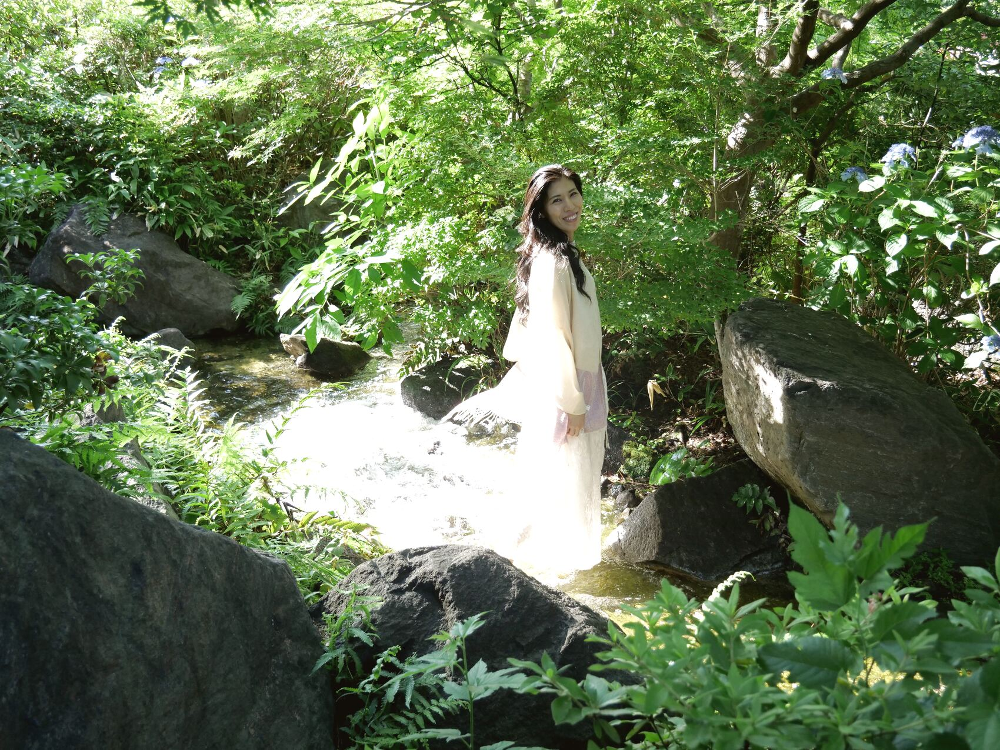
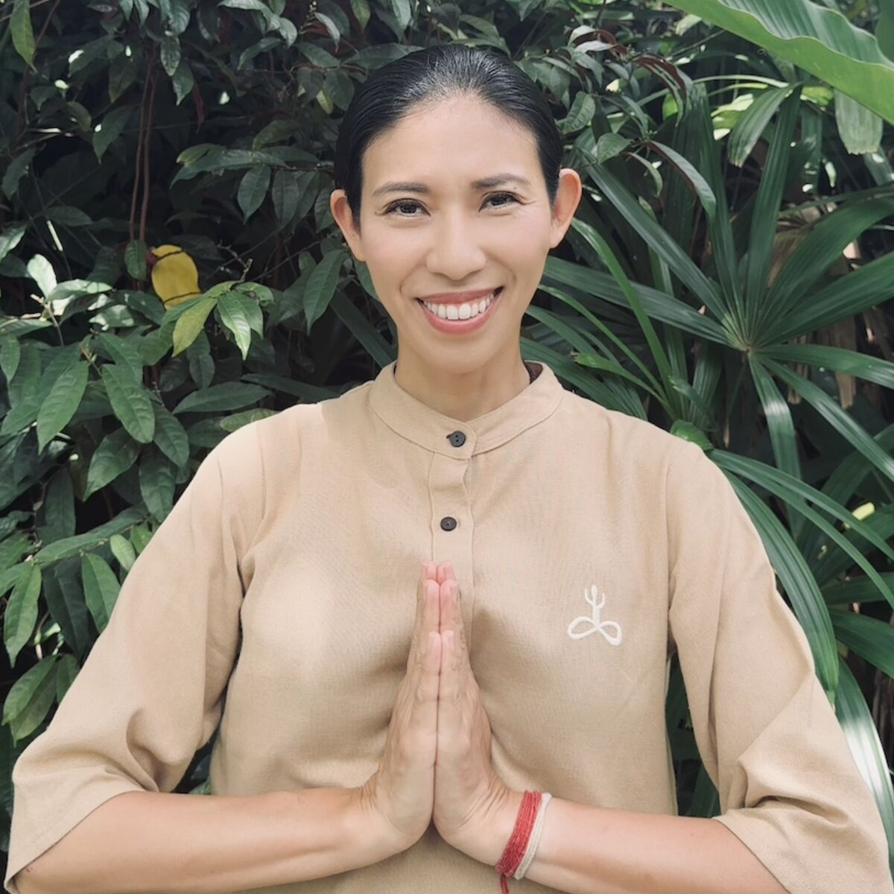

スクロール
ハタヨガとは
毎日を頑張っているのに、なんとなく疲れが抜けない。
肩や首のこわばり、眠りの浅さ、ストレス。
身体だけでなく、心まで余裕をなくしてしまうことはありませんか。
ハタヨガは、そんな現代を生きる私たちのために、何千年もの間受け継がれてきた、本来の健やかさを取り戻すためのヨガです。
一般的にヨガというと、身体を柔らかくするための運動やストレッチを思い浮かべる方も多いかもしれません。
しかし、本来のハタヨガは、それだけではありません。
身体・呼吸・心を一つひとつ丁寧に整え、私たちが本来持っている生命力を最大限に引き出していく、非常に洗練された実践です。
「ハ」は太陽、「タ」は月。
私たちの内側にある、活動と休息、緊張と安らぎ、陰と陽。
その二つのエネルギーのバランスが整うことで、身体も心も自然と調和し、本来の軽やかさを取り戻していきます。
継続して実践することで、
01
姿勢が整う
02
柔軟性や筋力が高まる
03
自律神経やホルモンバランスが整いやすくなる
04
内臓機能や代謝が活性化される
05
睡眠の質が向上する
06
集中力や思考力が高まる
07
ストレスに振り回されにくくなる
08
疲れにくく、活力あふれる毎日へとつながっていく
このように、身体だけでなく、心、そして生命エネルギーにも働きかけることが、ハタヨガの大きな特徴です。
ヨガという言葉には、「つながる」という意味があります。
身体と心が調和し、自分自身とのつながりを取り戻すこと。
そして、毎日をより穏やかに、より生き生きと過ごしていくこと。
それこそが、ハタヨガが目指す本来の姿です。
身体や心は、人生を制限するものではなく、本来は人生を豊かにするための大切な道具です。
ハタヨガは、その道具を丁寧に磨き、本来備わっている可能性を引き出していくための、一生続けられる実践なのです。
講師紹介

秦 節子
Setsuko Hata
- 13年間
- ジャズシンガー・作曲家として活動
- 1,750時間以上
- 専門的なトレーニング
- 4名
- 日本ではわずか4名のサドグル公認ハタヨガ講師の一人
21歳の頃、心身のバランスを大きく崩した経験から、「本当の健康とは何か」「人が本来持つ生命の可能性を最大限に引き出すにはどうすればよいのか」を探求し続けてきました。
その後、アメリカへ渡り、13年間ジャズシンガー・作曲家として活動。音楽を通して多くの人と出会う中で、「身体だけでなく、人の人生そのものをより豊かにするものを学びたい」という想いが強くなり、2024年、世界的なヨギ・サドグルによって設立された南インドの Isha Yoga Center へ渡りました。
約1年半にわたりアシュラムで生活しながらヨガと瞑想を実践し、世界でも最も厳格なヨガ教師養成プログラムの一つといわれるハタヨガ教師養成コースを修了。1,750時間以上に及ぶ専門的なトレーニングを積み、サドグル公認ハタヨガ講師の資格を取得しました。
現在、日本ではわずか4名のサドグル公認ハタヨガ講師の一人として、本場インドで受け継がれてきた伝統的なハタヨガを、大阪・東京を中心にお伝えしています。
私自身、ヨガによって人生が大きく変わりました。
以前の私は、ストレスや心身の不調に振り回されることがありました。しかし、ハタヨガを継続して実践する中で、どのような状況でも心が穏やかでいられるようになり、周囲の出来事に振り回されることが少なくなりました。
生命エネルギーが高まるにつれて、驚くほど疲れにくくなり、朝目覚めることが楽しみになり、一日一日を生きることそのものに喜びを感じられるようになりました。
そして、「自分にはできない」と思っていたことにも自然と挑戦できるようになり、自分自身の可能性が大きく広がっていくことを実感しています。
この変化は特別な才能によるものではなく、本格的なハタヨガを継続して実践したことで、身体・心・生命エネルギーが整い、本来の自分を取り戻していった結果だと感じています。
だからこそ、この素晴らしい伝統を一人でも多くの方へ届け、日本全国に本格的なハタヨガを広めることで、一人ひとりが心身ともに健やかで、自分らしく輝ける社会づくりに貢献していきたいと願っています。
体験クラス
本場インドで受け継がれてきた、本格ハタヨガを体験してみませんか？
毎日忙しく過ごしていると、
「疲れが抜けない」
「肩こりや姿勢が気になる」
「ストレスが多く、心に余裕がない」
「眠りが浅い」
「もっと元気に毎日を過ごしたい」
そんなふうに感じることはありませんか。
ハタヨガは、単なるポーズ・ストレッチや運動ではありません。
身体・呼吸・心・生命エネルギーを整え、本来あなたが持っている健やかさと可能性を引き出していく、何千年もの歴史を持つヨガです。
続けることで、
姿勢が整い、身体が軽くなる
肩や首のこわばりが和らぎ、疲れにくい身体へ
呼吸が深まり、自律神経が整いやすくなる
ホルモンバランスをサポートし、心身のバランスを整える
集中力・思考力が高まり、仕事や日常のパフォーマンスが向上する
ストレスに振り回されにくくなり、穏やかな心を育む
内臓機能や代謝をサポートし、内側から健やかな身体へ
生命エネルギーが高まり、毎日をより生き生きと過ごせるようになる
身体が変わるだけではなく、心が変わり、生き方まで少しずつ変わっていく。
それが、本格的なハタヨガの魅力です。
初心者の方や身体が硬い方でも安心してご参加いただけます。
一人ひとりのペースに合わせて丁寧にお伝えしますので、ヨガが初めての方も安心してご参加ください。
まずは、体験クラスに参加してみませんか？
あなたの人生を変える第一歩になるかもしれません。
日時
木曜日
9:30〜10:45AM
11:00〜12:15PM
土曜日
9:30AM〜10:45AM
11:00AM〜12:15 PM
会場
大阪市教育会館
（大阪市中央区法円坂1-1-38）
森ノ宮駅・谷町四丁目駅・大阪城公園駅より徒歩約10分
参加費
4,000円
空腹で動きやすい服装でおこしください
講師：秦 節子 Sadhguru Gurukulam 公認ハタヨガ講師
体験クラスに申し込むおすすめの本格ハタヨガプログラム
Surya Shakti（スーリヤ・シャクティ）
Surya Kriya（スーリヤ・クリヤ）
本場インドで何千年にもわたり受け継がれてきた、本格的なハタヨガプログラム。
太陽のサイクルと自分自身の生命を調和させ、身体・心・生命エネルギーを内側から整えていきます。
一般的なヨガやストレッチとは異なり、身体・エネルギーレベルで生命に変革をもたらすとてもパワフルなヨガの実践です。
Surya Shakti（スーリヤ・シャクティ）
生命エネルギーを高め、身体をしなやかで力強く育てる伝統的なハタヨガです。
期待できる効果
- 生命エネルギー・活力の向上
- 筋力・柔軟性・持久力の向上
- 姿勢・身体バランスの改善
- 代謝・身体機能の活性化
- 疲れにくく、軽やかな身体へ
- 集中力・行動力・パフォーマンスの向上
Surya Kriya（スーリヤ・クリヤ）
身体・呼吸・生命エネルギーを深く調和させ、内側から心身を整える本格的なハタヨガです。
期待できる効果
- 自律神経・ホルモンバランスを整えるサポート
- 深い集中力と心の安定
- ストレス・不安の軽減
- 呼吸が深まり、睡眠の質をサポート
- 瞑想の質を高め、内側の静けさを育む
- 穏やかで活力あふれる毎日へ
何千年もの間、ごく限られた環境で大切に受け継がれてきたこの学びは、世界的なヨギ・サドグルによって、現代を生きる私たちにも伝えられるようになりました。
人生をより豊かに生きるための、本格的なヨガを体験してみませんか。
▶ Surya Shakti・Surya Kriyaについて詳しく見る大阪開催日時
Surya Shakti（スーリヤ・シャクティ）
2026年8月2日（日）
15:00〜18:30
Surya Kriya（スーリヤ・クリヤ）
2026年8月16日（日）
15:00〜18:00